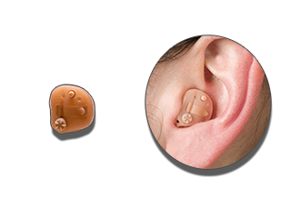
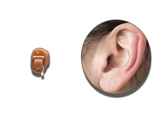

Шепіт улюбленої людини. Вигук радості. Слова захоплення. Дзвін келихів.
Слух - це більше, ніж сприйняття звуків.
Ми прагнемо надати допомогу всім, хто її потребує! У нас Ви можете підібрати слуховий апарат згідно свого стану і найвищим вимогам до функціоналу (Преміум, Бізнес, Базовий, Економ). Для пенсіонерів діє гнучка система знижок при наявності пенсійного посвідчення.
Якщо Ви відповіли на декілька питань "так", записуйтесь до нас на консульнацію або перегляньте слухові аппарати.
Завушні (BTE) - розміщуються за вухом людини.
Внутрішньовушні (ITE) - вставляються у вухо.
Внутріканальні (CIC) - вставляються глибоко у вушний канал.
Незважаючи на невеликий розмір сучасних слухових апаратів залишається висока якість відтворення звуку і прекрасна фільтрація шумів. Цифрова обробка сучасних слухових апаратів забезпечує чисте і неспотворене відтворення отриманого звуку в різних акустичних ситуаціях.
Пройшовши діагностику слуху в нашому кабінеті слухової допомоги, підібравши слуховий апарат і почавши користуватися ним, Ви можете розірвати замкнутий круг проблем, пов'язаних з порушеннями слуху, і знову насолоджуватися раніше втраченими мелодіями життя. Кабінет слухової допомоги надає комплексну допомогу у вирішенні проблем з порушеннями слуху.
Адреса:
Митрополита Шептицького, 4а, Тернопіль, Тернопільська область, 46002
Моб. тел.:
(123) 123-1234, (321) 321-4321
E-mail:
Графік роботи кабінету слухової допомоги:
пн-пт: 10:00-16:00,
сб: за попереднім записом,
нд: вихідний.